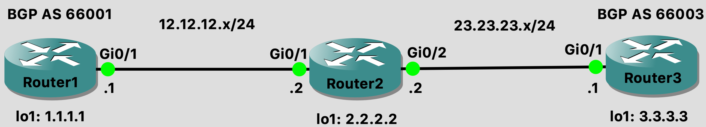

Securing the Control Plane and Data Plane on Cisco Routers
Lab Setup
Lab topology
Router1:
Router#
Router#conf t
Router(config)#hostname Router1
Router1(config)#int g0/1
Router1(config-if)#ip add 12.12.12.1 255.255.255.0
Router1(config-if)#no shut
Router1(config-if)#int lo1
Router1(config-if)#ip add 1.1.1.1 255.255.255.255
Router1(config-if)#no shut
Router1(config-if)#do wr
Router2:
Router#conf t
Router(config)#hostname Router2
Router2(config)#int g0/1
Router2(config-if)#ip add 12.12.12.2 255.255.255.0
Router2(config-if)#no shut
Router2(config-if)#int lo1
Router2(config-if)#ip add 2.2.2.2 255.255.255.255
Router2(config-if)#no sh
Router2(config-if)#int g0/2
Router2(config-if)#ip add 23.23.23.2 255.255.255.0
Router2(config-if)#no shut
Router2(config-if)#do wr
Router3:
Router#conf t
Router(config)#hostname Router3
Router3(config)#int g0/1
Router3(config-if)#ip add 23.23.23.1 255.255.255.0
Router3(config-if)#no shut
Router3(config-if)#int lo1
Router3(config-if)#ip add 3.3.3.3 255.255.255.255
Router3(config-if)#no shut
Router3(config-if)#do wr
Securing EIGRP
Securing the Control Plane
Use MD5 hash of a passcode/key
Prevents rogue router from injecting
EIGRP malicious routes
Authentication Create passcode inside of keychain
Reference keychain on interfaces participating in EIGRP
Other Routing Protocols
RIP
Authentication key configured inside of keychain
OSPF
Authentication key configured on interface
BGP
Authentication key configured in BGP configuration mode
Configuration Steps
Configure EIGRP
Create keychain
Reference keychain on interfaces
Router1:
Router1#conf t
Router1(config)#router eigrp 100
Router1(config-router)#network 12.12.12.0 0.0.0.255
Router1(config-router)#network 1.1.1.0 0.0.0.255
Router1(config-router)#passive-interface default
Router1(config-router)#no passive-interface gi 0/1
Router1(config-router)#exit
Router1(config)#key chain GloboRoutingKeys
Router1(config-keychain)#key 1
Router1(config-keychain-key)#key-string Globo123
Router1(config-keychain-key)#exit
Router1(config-keychain)#exit
Router1(config)#int g0/1
Router1(config-if)#ip authentication key-chain eigrp 100 GloboRoutingKeys
Router1(config-if)#ip authentication mode eigrp 100 md5
Router1(config-if)#do show run | sec key
key chain GloboRoutingKeys
key 1
key-string Globo123
ip authentication key-chain eigrp 100 GloboRoutingKeys
Router1(config-if)#exit
Router1(config)#service password-encryption
Router1(config)#do show run | sec key
key chain GloboRoutingKeys
key 1
key-string 7 1535070306257A767B
ip authentication key-chain eigrp 100 GloboRoutingKeys
Router1(config)#do wr
Router 2:
Router2#conf t
Router2(config)#service password-encryption
Router2(config)#router eigrp 100
Router2(config-router)#passive-interface default
Router2(config-router)#no passive-interface gi 0/1
Router2(config-router)#no passive-interface gi 0/2
Router2(config-router)#network 23.23.23.0 0.0.0.255
Router2(config-router)#network 2.2.2.0 0.0.0.255
Router2(config-router)#network 12.12.12.0 0.0.0.255
Router2(config-router)#key chain GloboRoutingKeys
Router2(config-keychain)#key 1
Router2(config-keychain-key)#key-string Globo123
Router2(config-keychain-key)#exit
Router2(config-keychain)#exit
Router2(config)#int g0/1
Router2(config-if)#ip authentication key-chain eigrp 100 GloboRoutingKeys
Router2(config-if)#ip authentication mode eigrp 100 md5
Router2(config-if)#do wr
Router 3:
Router3#conf t
Router3(config)#router eigrp 100
Router3(config-router)#passive-interface default
Router3(config-router)#no passive-interface gi 0/1
Router3(config-router)#network 3.3.3.0 0.0.0.255
Router3(config-router)#network 23.23.23.0 0.0.0.255
Router3(config-router)#do wr
EIGRP Debug:
# We see that router 1 is ignoring the packets until auth configured
*Dec 4 19:04:41.469 EIGRP: Gi0/1: ignored packet from 12.12.12.1, opcode = 5 (authentication off or key-chain missing)
# We see the adjacency forms when auth is configured
*Dec 4 19:07:33.818: %DUAL-5-NBRCHANGE: EIGRP-IPv4 100: Neighbor 12.12.12.1 (GigabitEthernet0/1) is up: new adjacency
### show ip route on Router3
Router3(config-router)#do show ip route
Codes: L local, C - connected, S static, R - RIP , M mobile, B - BGP
D - EIGRP , EX EIGRP external, 0 OSPF. IA OSPF inter area
N1 OSPF NSSA external type 1, N2 OSPF NSSA external type 2
E1 OSPF external type 1, E2 OSPF external type 2
i. IS-IS, su - IS-IS summary, L1 IS-IS level-1, L2 - IS-IS level-2
ia IS-IS inter area, candidate default, U - per-user static route
o - ODR, P periodic downloaded static route, H NHRP , 1 LISP
a application route
+ replicated route, % - next hop override, overrides from PfR
Gateway of last resort is not set
1.0.0.0/24 is subnetted, 1 subnets
D 1.1.1.0 [90/131072] via 23.23.23.2, 00:00:11. GigabitEthernet0/1
2.0.0.0/24 is subnetted, 1 subnets
D 2.2.2.0 [90/130816] via 23.23.23.2, 00:00:11, GigabitEthernet0/1
3.0.0.0/8 is variably subnetted, 2 subnets, 2 masks
C 3.3.3.0/24 is directly connected, Loopback3
L 3.3.3.3/32 is directly connected, Loopback3
12.0.0.0/24 is subnetted, 1 subnets
S 12.12.12.0 [1/0] via 23.23.23.2
23.0.0.0/8 is variably subnetted, 2 subnets, 2 masks
C 23.23.23.0/24 is directly connected, GigabitEthernet0/1
L 23.23.23.3/32 is directly connected, GigabitEthernet0/1
### ping 1.1.1.1 from 3.3.3.3
Router3(config-router)#do ping 1.1.1.1 source 3.3.3.3
Type escape sequence to abort.
Sending 5, 100-byte ICMP Echos to 1.1.1.1, timeout is 2 seconds:
Packet sent with a source address of 3.3.3.3
!!!!!
Success rate is 100 percent (5/5), round-trip min/avg/max = 4/5/8 ms
Securing RIP
Use the keychain
Configure RIPv2
Configure authentication
Router1:
Router1#conf t
Router1(config)#key chain GloboRoutingKeys
Router1(config-keychain)#key 1
Router1(config-keychain-key)#key-string Globo123
Router1(config-keychain-key)#exit
Router1(config-keychain)#exit
Router1(config)#router rip
Router1(config-router)#version 2
Router1(config-router)#passive-interface default
Router1(config-router)#no passive-interface gig 0/1
Router1(config-router)#network 1.1.1.0
Router1(config-router)#network 12.12.12.0
Router1(config-router)#int g0/1
Router1(config-if)#ip rip authentication key-chain GloboRoutingKeys
Router1(config-if)#ip rip authentication mode md5
Router1(config-if)#do wr
Router2:
Router2#conf t
Router2(config)#key chain GloboRoutingKeys
Router2(config-keychain)#key 1
Router2(config-keychain-key)#key-string Globo123
Router2(config-keychain-key)#exit
Router2(config-keychain)#exit
Router2(config)#router rip
Router2(config-router)#version 2
Router2(config-router)#passive-interface default
Router2(config-router)#no passive-interface gi 0/1
Router2(config-router)#no passive-interface gi 0/2
Router2(config-router)#network 2.2.2.0
Router2(config-router)#network 12.12.12.0
Router2(config-router)#network 23.23.23.0
Router2(config)#interface range gi 0/1 - 2
Router2(config-if-range)#ip rip authentication key-chain GloboRoutingKeys
Router2(config-if-range)#ip rip authentication mode MD5
Router2(config-if)#do wr
Router3:
Router3#conf t
Router3(config)#key chain GloboRoutingKeys
Router3(config-keychain)#key 1
Router3(config-keychain-key)#key-string Globo123
Router3(config-keychain-key)#exit
Router3(config-keychain)#exit
Router3(config)#router rip
Router3(config-router)#version 2
Router3(config-router)#passive-interface default
Router3(config-router)#no passive-interface gi 0/1
Router3(config-router)#network 23.23.23.0
Router3(config-router)#network 3.3.3.0
Router3(config-router)#int gi 0/1
Router3(config-if)#ip rip authentication key-chain GloboRoutingKeys
Router3(config-if)#ip rip authentication mode md5
Router3(config-if)#do wr
RIP Debug:
Router3#sh ip route
Codes: L - local, C - connected, S - static, R - RIP, M - mobile, B - BGP
D - EIGRP, EX - EIGRP external, O - OSPF, IA - OSPF inter area
N1 - OSPF NSSA external type 1, N2 - OSPF NSSA external type 2
E1 - OSPF external type 1, E2 - OSPF external type 2
i - IS-IS, su - IS-IS summary, L1 - IS-IS level-1, L2 - IS-IS level-2
ia - IS-IS inter area, * - candidate default, U - per-user static route
o - ODR, P - periodic downloaded static route, H - NHRP, l - LISP
a - application route
+ - replicated route, % - next hop override, p - overrides from PfR
Gateway of last resort is not set
R 1.0.0.0/8 [120/2] via 23.23.23.2, 00:00:13, GigabitEthernet0/1
R 2.0.0.0/8 [120/1] via 23.23.23.2, 00:00:13, GigabitEthernet0/1
3.0.0.0/32 is subnetted, 1 subnets
C 3.3.3.3 is directly connected, Loopback1
R 12.0.0.0/8 [120/1] via 23.23.23.2, 00:00:13, GigabitEthernet0/1
23.0.0.0/8 is variably subnetted, 2 subnets, 2 masks
C 23.23.23.0/24 is directly connected, GigabitEthernet0/1
L 23.23.23.1/32 is directly connected, GigabitEthernet0/1
Securing OSPF
Configure authentication without a hash
Look at packet capture
Configure authentication to use hash
Configure the other routers
Router1:
Router1#conf t
Router1(config)#key chain GloboRoutingKeys
Router1(config-keychain)#key 1
Router1(config-keychain-key)#key-string Globo123
Router1(config-keychain-key)#exit
Router1(config-keychain)#exit
Router1(config)#router ospf 100
Router1(config-router)#passive-interface default
Router1(config-router)#no passive-interface GigabitEthernet 0/1
Router1(config-router)#network 12.12.12.0 0.0.0.255 area 0
Router1(config-router)#network 1.1.1.0 0.0.0.255 area 0
Router1(config-router)#exit
Router1(config)#interface GigabitEthernet 0/1
Router1(config-if)#ip ospf 100 area 0
Router1(config-if)#ip ospf authentication message-digest
Router1(config-if)#ip ospf message-digest-key 1 md5 Globo123
Router1(config-if)#do wr
Router2:
Router2#conf t
Router2(config)#key chain GloboRoutingKeys
Router2(config-keychain)#key 1
Router2(config-keychain-key)#key-string Globo123
Router2(config-keychain-key)#exit
Router2(config-keychain)#exit
Router2(config)#router ospf 100
Router2(config-router)#passive-interface default
Router2(config-router)#no passive-interface GigabitEthernet 0/1
Router2(config-router)#no passive-interface GigabitEthernet 0/2
Router2(config-router)#network 12.12.12.0 0.0.0.255 area 0
Router2(config-router)#network 23.23.23.0 0.0.0.255 area 0
Router2(config-router)#network 2.2.2.0 0.0.0.255 area 0
Router2(config-router)#exit
Router2(config)#interface range GigabitEthernet 0/1 - 2
Router2(config-if)#ip ospf 100 area 0
Router2(config-router)#ip ospf authentication message-digest
Router2(config-if)#ip ospf message-digest-key 1 md5 Globo123
Router2(config-if)#do wr
Router3:
Router3#conf t
Router3(config)#key chain GloboRoutingKeys
Router3(config-keychain)#key 1
Router3(config-keychain-key)#key-string Globo123
Router3(config-keychain-key)#exit
Router3(config-keychain)#exit
Router3(config)#router ospf 100
Router3(config-router)#passive-interface default
Router3(config-router)#no passive-interface GigabitEthernet 0/1
Router3(config-router)#network 23.23.23.0 0.0.0.255 area 0
Router3(config-router)#network 3.3.3.0 0.0.0.255 area 0
Router3(config-router)#exit
Router3(config)#interface GigabitEthernet 0/1
Router3(config-if)#ip ospf 100 area 0
Router3(config-router)#ip ospf authentication message-digest
Router3(config-if)#ip ospf message-digest-key 1 md5 Globo123
Router3(config-if)#do wr
OSPF Debug:
### OSPF without hashing:
Router1(config-if)#ip ospf authentication-key Globo123
Router1(config-if)#ip ospf authentication
Packet capture showing OSPF authentication in plain-text
### OSPF with hashing:
Router1(config-if)#ip ospf authentication message-digest
Router1(config-if)#ip ospf message-digest-key 1 md5 Globo123
Packet capture showing OSPF Auth Type as Cryptographic
Router3(config-if)#do sh ip route
Codes: L - local, C - connected, S - static, R - RIP, M - mobile, B - BGP
D - EIGRP, EX - EIGRP external, O - OSPF, IA - OSPF inter area
N1 - OSPF NSSA external type 1, N2 - OSPF NSSA external type 2
E1 - OSPF external type 1, E2 - OSPF external type 2
i - IS-IS, su - IS-IS summary, L1 - IS-IS level-1, L2 - IS-IS level-2
ia - IS-IS inter area, * - candidate default, U - per-user static route
o - ODR, P - periodic downloaded static route, H - NHRP, l - LISP
a - application route
+ - replicated route, % - next hop override, p - overrides from PfR
Gateway of last resort is not set
1.0.0.0/32 is subnetted, 1 subnets
O 1.1.1.1 [110/3] via 23.23.23.2, 00:00:09, GigabitEthernet0/1
2.0.0.0/32 is subnetted, 1 subnets
O 2.2.2.2 [110/2] via 23.23.23.2, 00:00:09, GigabitEthernet0/1
3.0.0.0/32 is subnetted, 1 subnets
C 3.3.3.3 is directly connected, Loopback1
12.0.0.0/24 is subnetted, 1 subnets
O 12.12.12.0 [110/2] via 23.23.23.2, 00:00:09, GigabitEthernet0/1
23.0.0.0/8 is variably subnetted, 2 subnets, 2 masks
C 23.23.23.0/24 is directly connected, GigabitEthernet0/1
L 23.23.23.1/32 is directly connected, GigabitEthernet0/1
## Securing OSPF
* Use the keychain
* Configure RIPv2
* Configure authentication
Securing BGP
Configure TTL Security command
Configure BGP neighbor authentication
Multihops:
Command to allow peers to connect:
neighbor 23.23.23.0 ebgp-multihopMore secure way to do it (specifying exact number of hops for neighborship to perform):
neighbor 23.23.23.0 ttl-security hops 2Protects against peering with an unauthorised neighbor
Prevents DoS against BGP process
Prevents a CPU exhaustion attack (lots of SYN packets) - if TTL too high, router won’t accept packet and CPU won’t be affected

Router1:
Router1(config)#ip route 23.23.23.0 255.255.255.0 12.12.12.2
Router1(config)#router bgp 66001
Router1(config-router)#bgp router-id 12.12.12.1
Router1(config-router)#neighbor 23.23.23.1 remote-as 66003
Router1(config-router)#network 1.1.1.0 mask 255.255.255.0
Router1(config-router)#neighbor 23.23.23.1 ttl-security hops 2
Router1(config-router)#neighbor 23.23.23.1 password Globo123
Router3:
Router3(config)#ip route 12.12.12.0 255.255.255.0 23.23.23.2
Router3(config)#router bgp 66003
Router3(config-router)#bgp router-id 23.23.23.3
Router3(config-router)#neighbor 12.12.12.1 remote-as 66001
Router3(config-router)#network 3.3.3.0 mask 255.255.255.0
Router3(config-router)#neighbor 12.12.12.1 ttl-security hops 2
Router3(config-router)#neighbor 12.12.12.1 password Globo123
BGP Debug:
Router1(config-router)#do clear ip bgp *
Router3(config-router)#do clear ip bgp *
Access Control Lists
All ACLs have an implicit deny statement at the bottom of the list
Standard ACL
Matches the source IP address
Permit and deny
IP address followed by
wildcard
use keyword host
use keyword any
Traffic is matched against an ACL line-by-line until a match is found
Sample Standard ACL
(config)#access-list 11 permit 192.168.1.0 0.0.0.255
(config)#access-list 11 deny host 172.20.1.55
(config)#access-list 11 permit 172.20.1.0 0.0.0.255
(config)#access-list 11 deny any
Sample Standard ACL 2
(config)#ip access-list standard 1350
(config-std-nacl)#permit 192.168.1.0 0.0.0.255
(config-std-nacl)#permit 172.20.1.0 0.0.0.255
(config-std-nacl)#deny host 172.20.1.55
(config-std-nacl)#deny any
Extended ACL
Source & destination IP addresses
Layer 4 protocol
Layer 4 port
QoS, multicast, & routing protocols
Extended ACLs are numbered (100-199 & 2000-2699)
Sample Extended ACL
(config)#access-list 111 permit ip 10.10.10.0 0.0.0.255 any log
(config)#access-list 111 deny tcp any host 192.168.1.85 eq 22 log
(config)#access-list 111 deny any any
Sample Extended ACL 2
(config)#ip access-list extended 2050
(config-ext-nacl)#deny ip host 192.168.1.50 any
(config-ext-nacl)#deny ip host 192.168.1.51 any
(config-ext-nacl)#permit ip 192.168.1.0 0.0.0.255 any
Applying ACLs and Other ACL Types
ACL Placement
Apply the ACL inbound or outbound on an interface
(config-if)#ip access-group nameOrNumber {inlout}
Other ACL Usage
permit host 1.1.5.25
permit host 1.1.5.26 deny any
Inside of auth policy
Define traffic to be NATd
Traffic to be encrypted
Can be used on VLAN interfaces
dACls
Policy-maps
Time Based ACL
(config)#time-range Friday
(config-time-range)#periodic Friday 08:00 to 16:59
(config-time-range)#exit
(config)#time-range Jan2020
(config-time-range)#absolute start 00:00 Jan 2020 end 23:59 31 Jan 2020
(config-time-range)#exit
(config)#access-list 2050 permit ip 172.20.1.0 0.0.0.255 any time-range Jan2020
Reflexive ACLs
Keep track of IP sessions
Create dynamic ACEs allowing return traffic
Once session has ended ACE will be removed
(config)#ip access-list extended Internet-Traffic-Out
(config-ext-nacl)#permit tcp 172.20.1.0 0.0.0.255 any eq 443 reflect dynamic-ACL
(config-ext-nacl)#permit tcp 172.20.1.0 0.0.0.255 any eq 80 reflect dynamic-ACL
(config-ext-nacl)#exit
(config)#ip access-list extended Internet-Traffic-In
(config-ext-nacl)#evaluate-dynamic-ACL
(config-ext-nacl)#exit
Policy Maps, NBAR, URPF & TCP Intercept
Policy Maps and Class Maps
Policy Maps Can apply policy such as policing bandwidth, priority, or drop the traffic.
Class Maps Matches traffic based on ACLs, VLANs, protocols, QoS attributes
Network Based Application Recognition
NBAR:
ACLs can be difficult to identify applications
Uses protocol discovery to classify traffic
Traffic matched in a class map
Would then be dropped in a policy map
Apply policy map to interface
Configuring NBAR:
(config-if)#ip nbar protocol-discovery
(config-if)#exit
(config)#class-map ptpTraffic
(config-cmap)#match protocol bittorrent
(config-cmap)#match protocol edonkey
(config-cmap)#exit
(config)#policy-map drop-p2pTraffic
(config-pmap)#class ptpTraffic
(config-pmap-c)#drop
(config-pmap-c)#exit
(config-pmap)#exit
Applying NBAR:
(config)#int gi 0/1
(config-if)#service-policy {inputloutput} drop-p2p
Unicast Reverse Path Forwarding
URPF:
Helps prevent spoofed IP addresses
Verifies the packet was received on the correct interface
Packet must be reachable from the same interface it came from
(config-if)#ip verify unicast reverse-path
(config-if)#ip verify unicast reachable-via rx
TCP Intercept
Intervenes and protects servers from SYN-Flood Attacks
Intercept Mode
Router is a man-in-the-middle
Uses aggressive timeouts for half-open TCP sessions
Router will stitch legitimate sessions together
Watch Mode
Watch connection requests
Intervene if connections aren’t established within allotted time
Intervenes and protects servers from SYN-Flood Attacks:
(config)#ip access-list standard Important_Servers
(config-ext-nacl)#permit tcp any host 192.168.1.50
(config-ext-nacl)#exit
(config)#ip tcp intercept mode {watch]intercept}
(config)#ip tcp intercept list Important_Servers
Control Plane Policing
CoPP
Utilizes ACLs and policy maps
Used to police any packets that are routed to the control plane
Configuring CoPP:
Define traffic using ACLs
Create a class map referencing ACL
Policy map referencing class map
Apply policy map to the control plane
Router1(config)#ip access-list extended CoPP-Traffic
Router1(config-ext-nacl)#permit tcp any any eq bgp
Router1(config-ext-nacl)#permit ospf any any
Router1(config-ext-nacl)#permit eigrp any any
Router1(config-ext-nacl)#exit
Router1(config)#class-map CoPp-Class-Map
Router1(config-cmap)#match access-group name CoPP-Traffic
Router1(config-cmap)#exit
Router1(config)#policy-map CoPP-Policy-Map
Router1(config-pmap)#class CoPP-Class-Map
Router1(config-pmap-c)#police 200000 conform-action transmit exceed-action drop
Router1(config-pmap-c-police)#exit
Router1(config-pmap-c)#exit
Router1(config-pmap)#exit
Router1(config)#control-plane
Router1(config-cp)#service-policy input Copp-Policy-Map
policy map Copp-Policy-Map not configured
Router1(config-cp)#service-policy input CoPP-Policy-Map